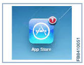
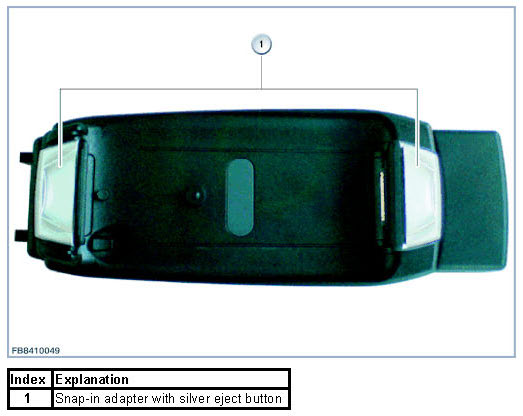
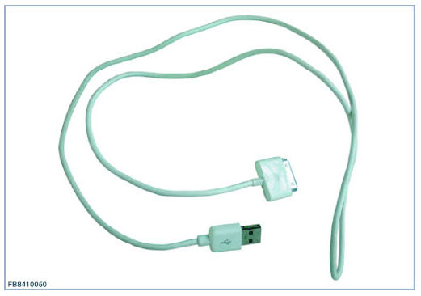
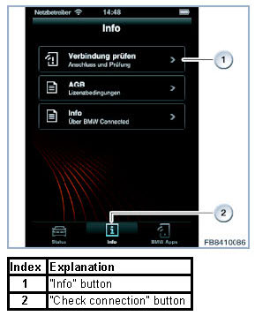
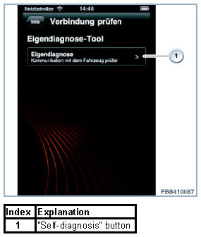
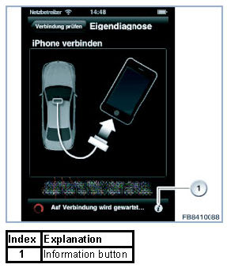
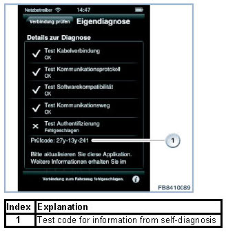

Functional Description BMW Connected
Functional Description BMW Connected
BMW Connected
BMW Connected constitutes the integration of a mobile terminal device in the systems of the vehicle by using an appropriate application (App). The functions of the application are displayed on the Central Information Display (CID) in the vehicle. It is operated by the controller in the centre console.
Certain system requirements must be met in order to use BMW Connected. Optional equipment 6NR (BMW Connected) must be available in the vehicle. The customer also requires an appropriate terminal device (only iPhone possible at present) with a suitable mobile radio contract (broadband data connection). The scope of functionality of terminal devices without a mobile radio connection (only iPod Touch at present) is restricted.
NOTE:
A broadband data connection is needed in order to use all of the functionality of BMW Connected. The costs that are incurred (e.g. data roaming) are a constituent of the customer contract with the terminal device service provider. The application is available free of charge via the respective terminal device provider portal (e.g. Apple(TM) AppStore for iPhone and iPod Touch). The country-specific requirements and prerequisites must be observed when doing this.
The requirements for the terminal device and its software can be found in the BMW compatibility matrix for mobile terminal devices. The BMW compatibility matrix and detailed information about BMW Connected can be found on the Internet using the following link: www.bmw.com/connectivity
Preparatory measures to be taken by the customer for using BMW Connected
The customer must download the relevant application from the terminal device manufacturer's portal and install it on his terminal device. Software updates for the application may be available, and these are displayed to the customer on his terminal device. The latest version of the application must always be used.
An example of the display that appears when a software update for an application is available can be seen in the graphic. The number of available software updates for all applications installed on the terminal device is displayed in the red spot.

Connecting the terminal device to the vehicle
All of the data information that is required for BMW Connected is transferred to the vehicle via the USB. There are two options for connecting the end device to the vehicle.
Method 1: Connection via a Media snap-in adapter.
The Media snap-in adapter can be recognized by the silver eject button (see graphic). In addition, the text "VIDEO READY" or "MEDIA" is located on the underside. The audio playback is transferred analogously in this snap-in adapter.
NOTE: The video function is only supported via the media snap-in adapter.

Method 2: Connection via the original Apple USB cable.
This USB cable is included in the scope of delivery of the terminal device. Upon connection using the Apple(TM) USB cable the audio playback is transferred via the USB.

NOTE: If an attempt is made to play video files via the USB cable, audio will be output via the speakers. The control display in the vehicle will remain dark, and no picture will be displayed.
Application functionality within the vehicle
In order to use the functionality of BMW Connected in the vehicle, the application must be started on the terminal device. The BMW symbol appears on the display of the terminal device, together with the request to connect the terminal device to the vehicle. When the terminal device has been successfully connected, a message appears on the display of the terminal device. The terminal device can no longer be operated. It is operated solely by the controller in the centre console. It is displayed on the vehicle's control display.
NOTE: If the customer receives a telephone call on his connected terminal device whilst BMW Connected is being used, the BMW Connected application may be aborted as soon as the call is accepted. After the telephone call the BMW Connected application automatically starts on the terminal device. If the customer would like to make a call whilst using BMW Connected, it may be necessary to end the application and restart again if required.
BMW Connected functionality
The application includes the following:
- Web radio
- Last Mile
- Stolen Vehicle Tracking
Deviations from the listed functionality depend on the terminal device and the version of the application.
Note concerning lack of a broadband data connection:
It is possible that the application will appear on the vehicle CID and can be operated using the I-Drive controller without problems. However, some functions, for example the web radio, will occasionally fail to work. In this case the availability of the Internet broadband data connection must be checked. The availability and speed of the broadband connection depends on the location. Drive vehicle to a different location if necessary. Check the network settings on the terminal device (mobile data connections must be switched on).
Troubleshooting
If problems occur when establishing the connection, the customer can perform a self-diagnosis. This self-diagnosis is integrated in the application in order to locate the cause of the problem. The procedure for performing the self-diagnosis is self-explanatory. Proceed as follows:
1. Do not connect terminal device to the vehicle. Disconnect terminal device from vehicle, if necessary.
2. Start the application.
3. Activate "Info" button (2).
4. Select "Check connection" button (1).
5. Activate "Self- diagnosis" button (1).
6. Connect terminal device to vehicle. The self-diagnosis then starts automatically.


NOTE:
If the customer is not able to solve his problem with the aid of self-diagnosis, the BMW Connected support page is available on the Internet using the following link: www.bmw.com/connectivity
In rare cases the customer may be asked to contact his authorized BMW dealer.
Dealing with problems in the service advice area
In the majority of cases, customers will not want to be without their terminal device for long periods of time. This is a particular challenge for service employees, because the terminal device cannot always be available in the workshop for diagnosis. The service employee should still ask the customer to make his terminal device available for the entire duration of the diagnosis. If this is not possible as far as the customer is concerned, the service employee must perform the self-diagnosis again together with the customer. The diagnostic information that is acquired forms the basis for troubleshooting.
Detailed information can be displayed by pressing the information button at the bottom right of the terminal device display (1).

An alphanumeric test code (1) containing all of the available diagnostic information is generated by the self-diagnosis.

The test code contains the following information:
Example: 234 - 51y - 221
- Position 1: Version of the test code
- Position 2: Results of self-diagnosis
- Position 3: Terminal device model
- Position 4: Terminal device software version
- Position 5: Terminal device software version
- Position 6: Terminal device software version
- Position 7: Application software version
- Position 8: Application software version
- Position 9: Application software version
The following steps must be performed when providing service advice:
1. Record a detailed description of the problem.
2. Check the terminal device for compatibility and possible functional restrictions at www.bmw.com/connectivity.
3. Disconnect terminal device from vehicle.
4. Check for possible availability of software updates for the BMW Connected application on the terminal device.
5. Have the customer perform a software update if necessary.
6. Perform self-diagnosis. The procedure is described under Troubleshooting.
7. In the event of problems, also check the FAQ page on the ASAP (Aftersales Assistance Portal) as well as the self-diagnosis information.
If the cause of the fault does not lie in the terminal device that has been used or the connection to the vehicle, a works order must be opened. The test code from the self-diagnosis must be documented on the works order by the Service Advisor. The test code is strictly necessary for passing all of the information to the workshop. It contains the basic information for performing a diagnosis without a terminal device. Successful diagnosis in the workshop and settlement in warranty cases are only possible if the test code is provided.
NOTE: The service employee must have special knowledge of BMW Connected in order to perform the self-diagnosis in accordance with specifications and interpret the information. The employee must be given suitable training beforehand. The BMW Connected page in the ASAP (Aftersales Assistance Portal) is available to the employee for assistance. It is also advisable to have an original Apple(TM) USB cable available for testing at the service employee's workplace.
Dealing with problems in the workshop
NOTE: Stored faults in the Combox and the headunit must be dealt with first according to the procedure.
In order to trace faults on the vehicle, the service employee must perform a vehicle test and run the [Check telecommunications system] procedure. The test module can be found at:
Information Search - Function structure - Body - Audio, Video, Telephone, Navigation - Telecommunication - System check
The relevant procedure for evaluating the test code is integrated here (A4A - Automotive application). The test code is decrypted using the procedure. The service employee hereby receives all necessary information. He is then able to perform a focussed diagnosis.
NOTE:
The test code can be evaluated on a workshop computer (e.g. Service Advisor's computer). A functional ISTA client must be installed on this computer. The vehicle can be identified via the vehicle identification number or its basic characteristics using the ISTA Client. The test module can be found at:
Information search - Functional structure - Body - Audio, Video, Telephone, Navigation - Telecommunication - Other test modules - BMW Connected
This test module is only intended to be a source of information for service advisors and does not generate a diagnosis code. If a diagnosis code is needed, proceed as described in section Dealing with problems in the workshop.
We can assume no liability for printing errors or inaccuracies in this document and reserve the right to introduce technical modifications at any time.